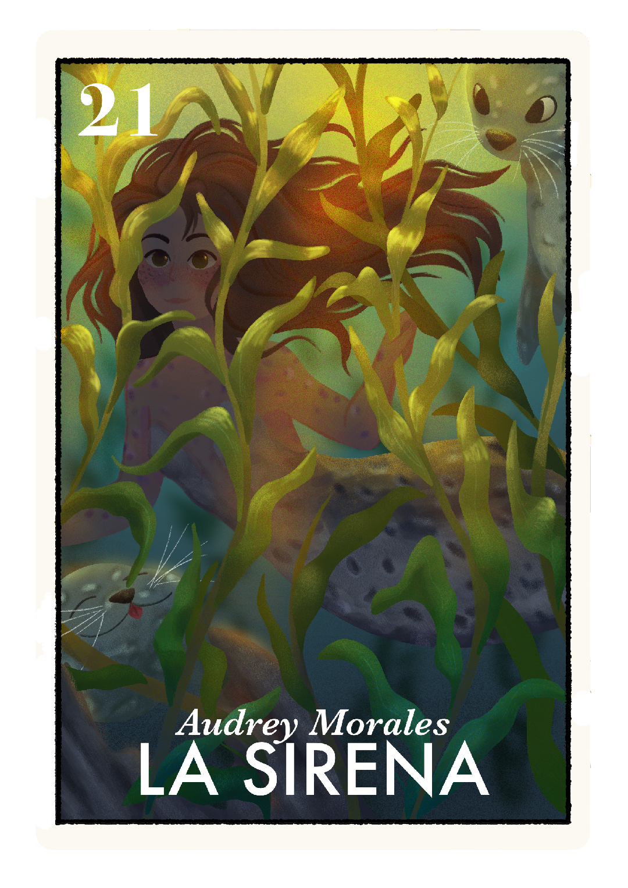
Audrey Morales - La Sirena
Hello !!! My name is Audrey :•) I’m a vis dev enthusiast who loves all things silly, whimsical and anything fantasy or folklore related. I dip into multiple areas of the art pool like illustration, prop design, 2d animation and character design, but being able to create an environment and space for a scene has always been something very exciting to do in my mind. My work is mostly illustrative and sketchy, yet I always find myself lost in the details. I also have my fair share of traditional works including pottery which I now love to do. I'm always crafting something in my free time!!! If not, I'm out traveling once again to places like Ireland and Italy, studying plein airs or comic spirit - and of course, their folklore.
Growing up I found myself so in love with fantasy and folklore. Being able to find comfort in those worlds where things could be adventurous and exciting kept me inspired to try and give others that same sense of solace and place they felt like they belonged. Anything surrounding the idea of being chosen by people who care for you - themes like found family, girlhood and, by no surprise, friendship have always been near and dear to my heart. Mix that into a story with fantastical monsters and silly creatures, you’re sure to find me there.
I can’t wait to see what else there is in store in the future for both me and my fellow artists. I’m very excited to say being a part of this cohort of such wonderful people is something I’ll always be proud of :•)
catch me out in Ireland amongst the cliffs and selkies!
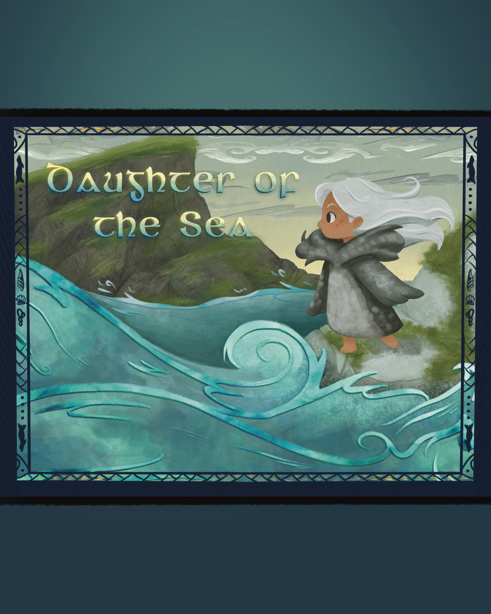
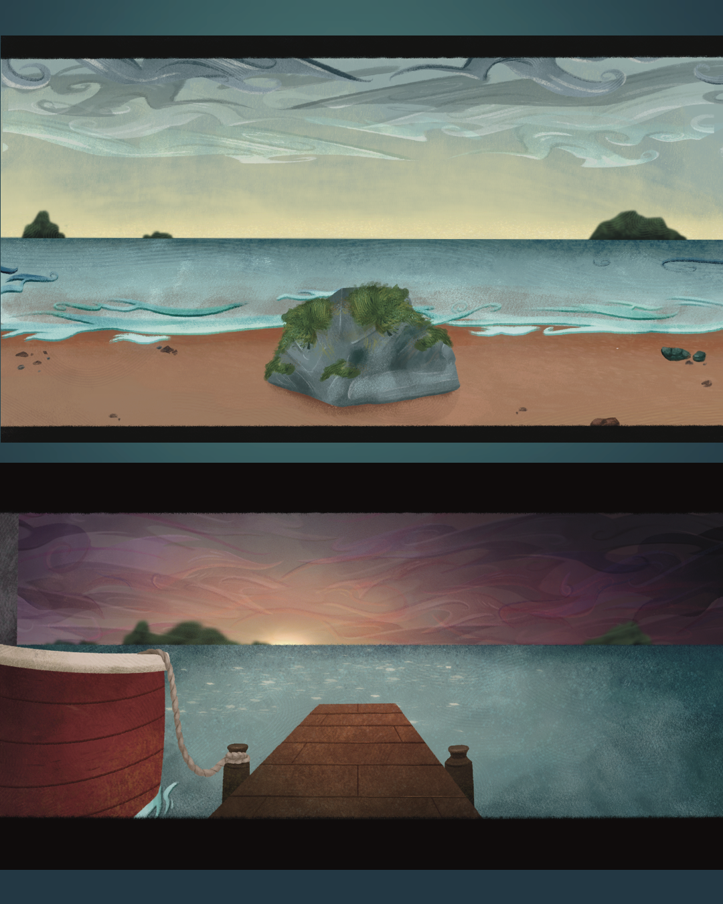
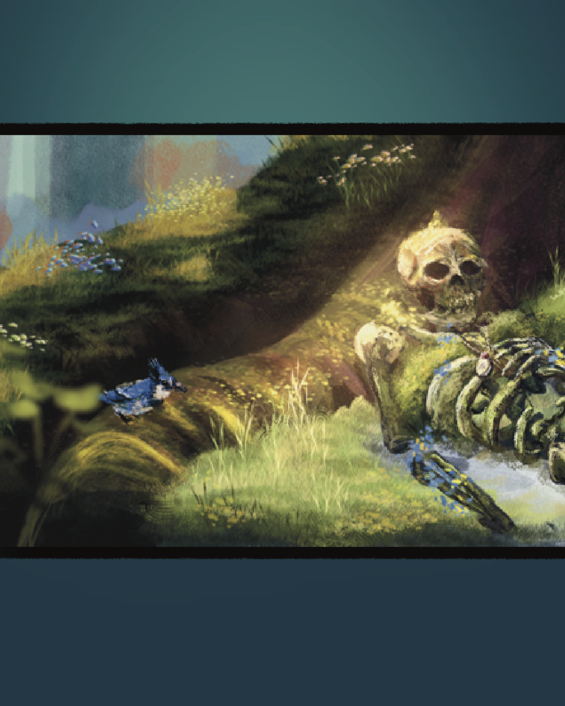
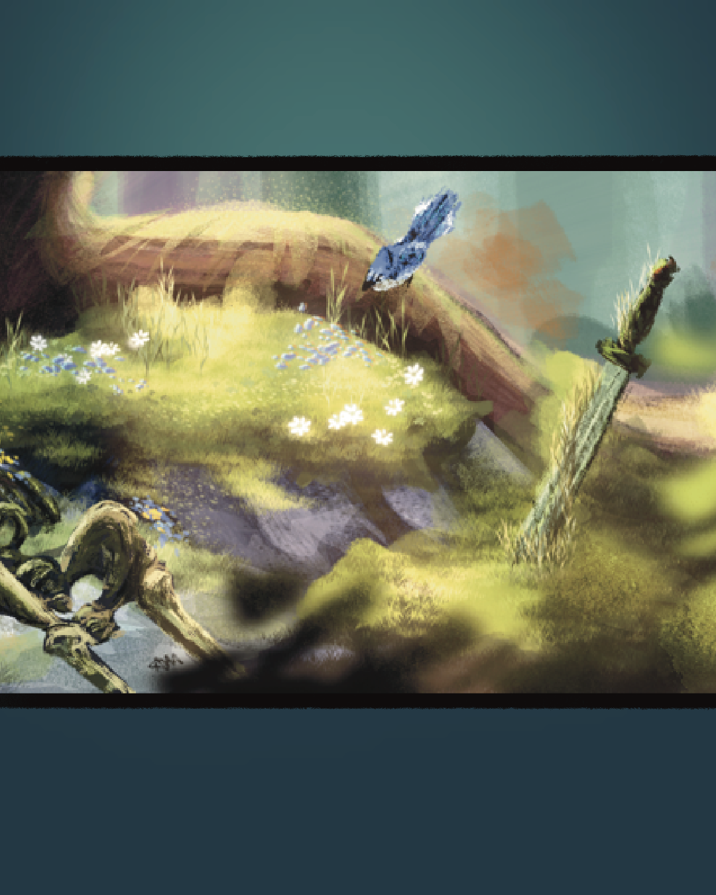
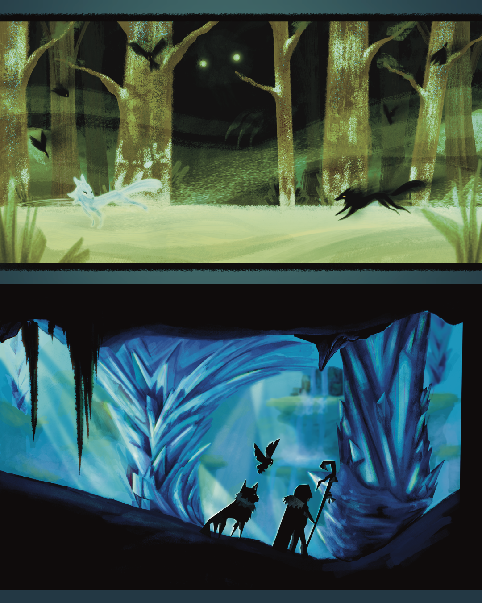
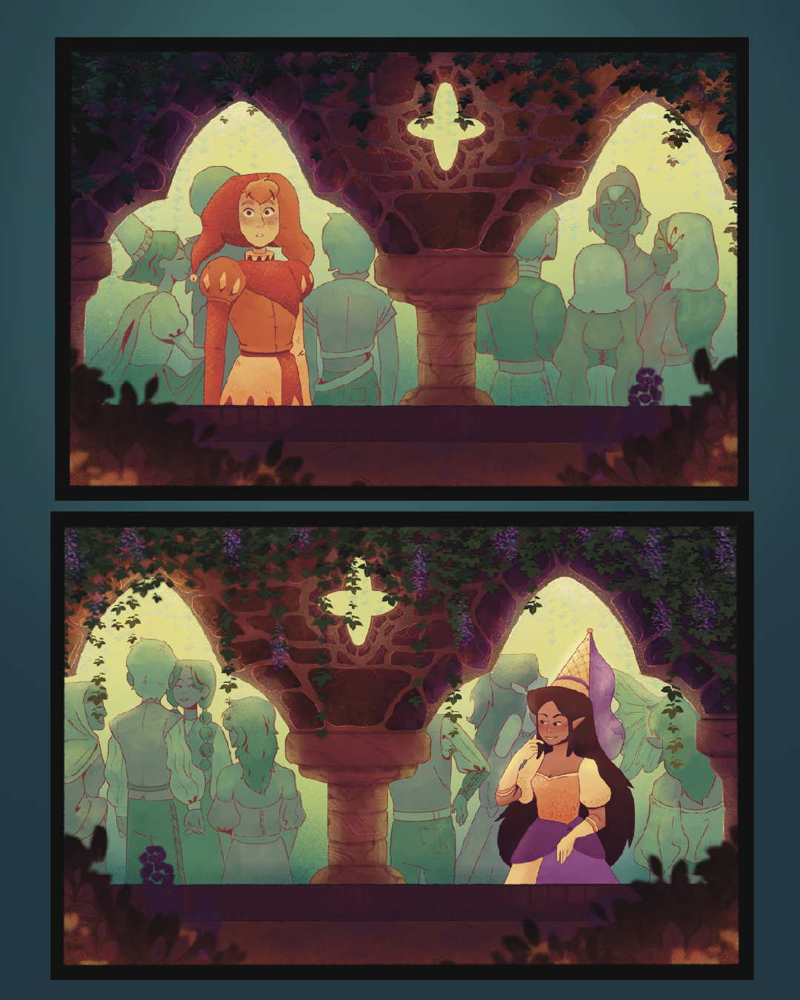
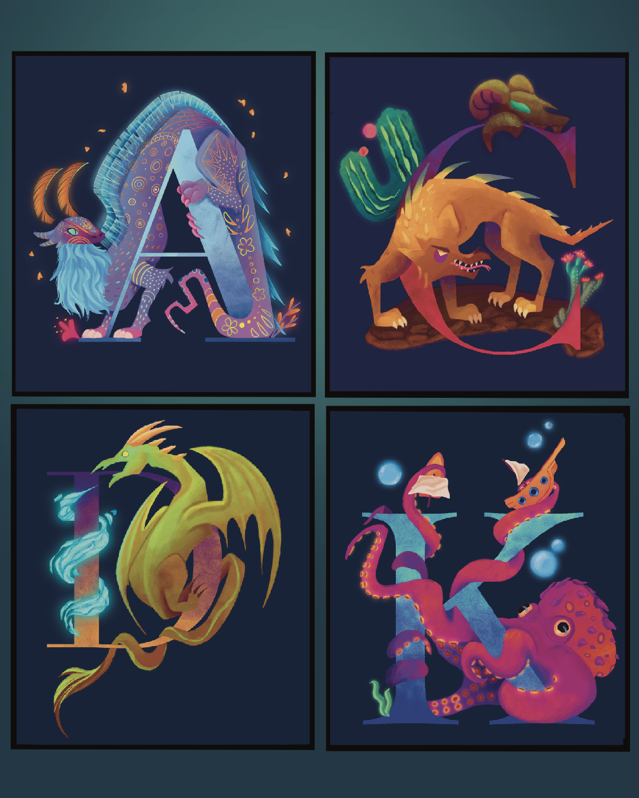
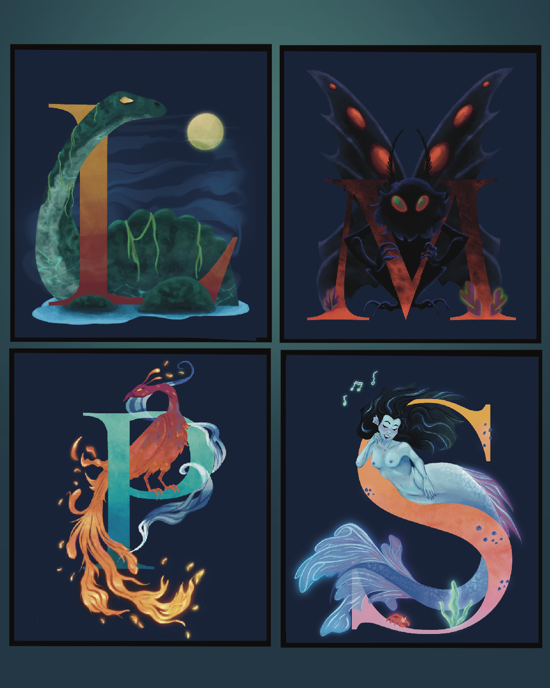
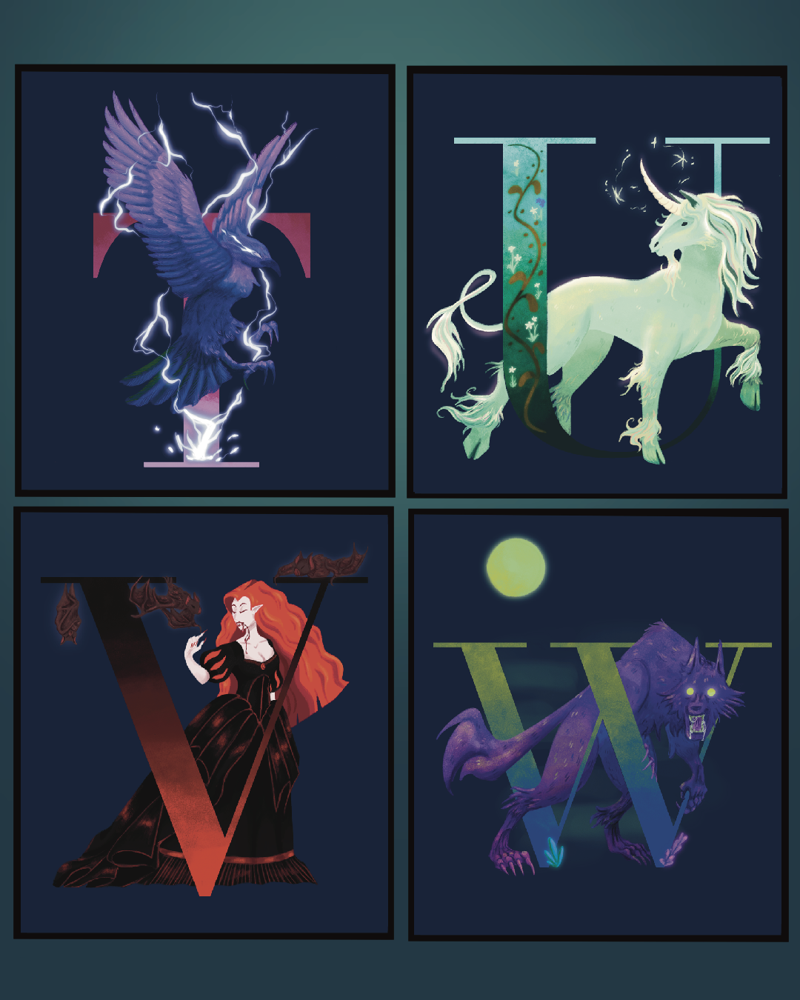
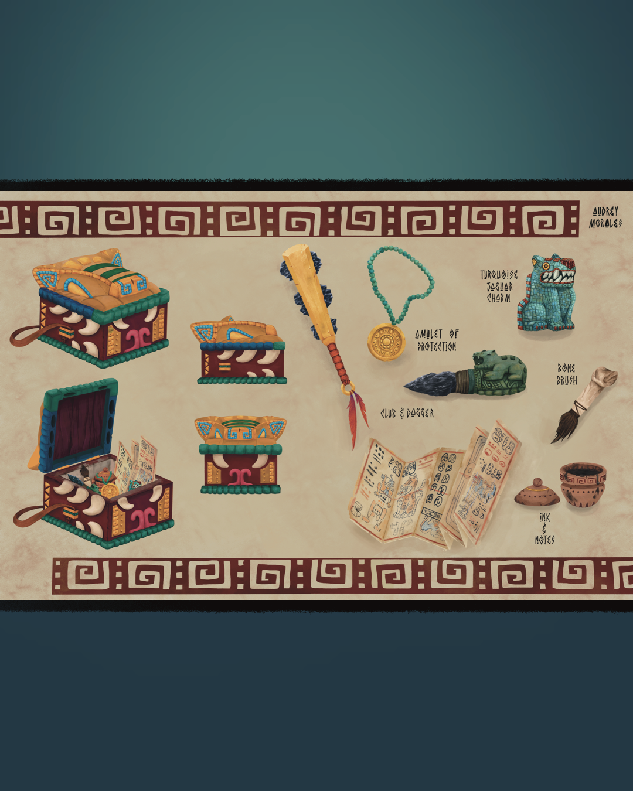
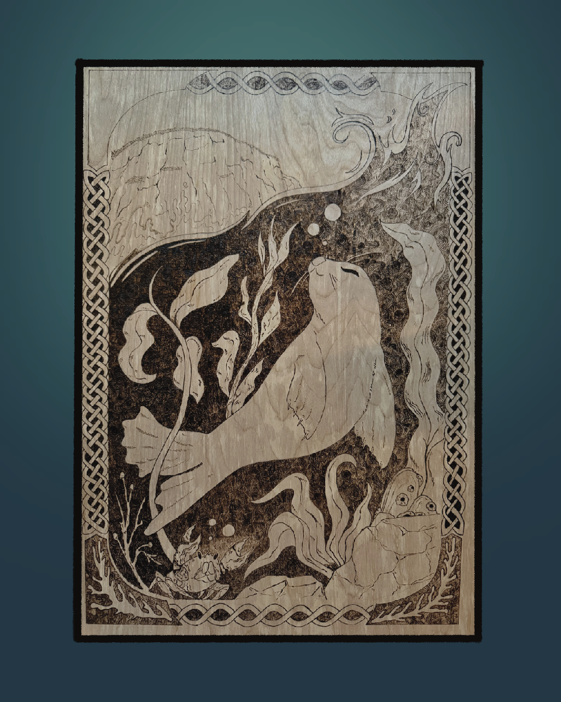
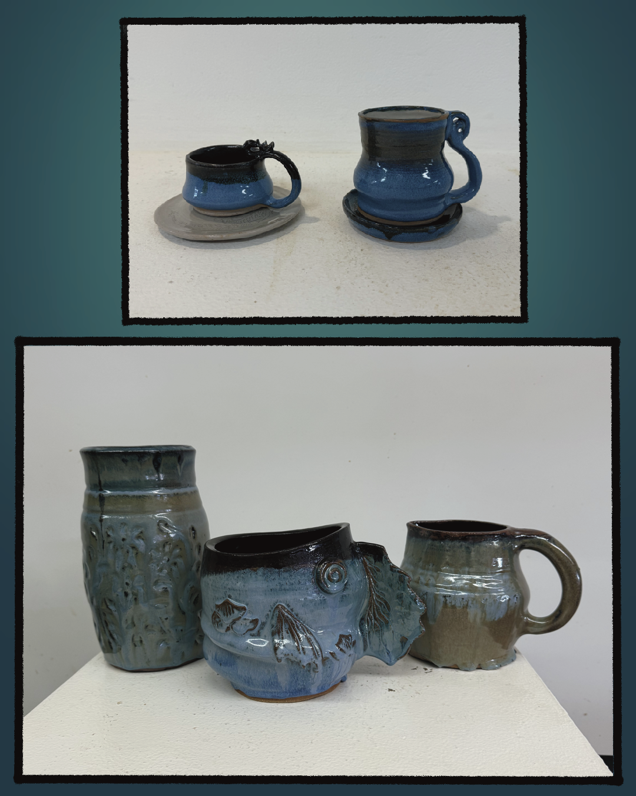